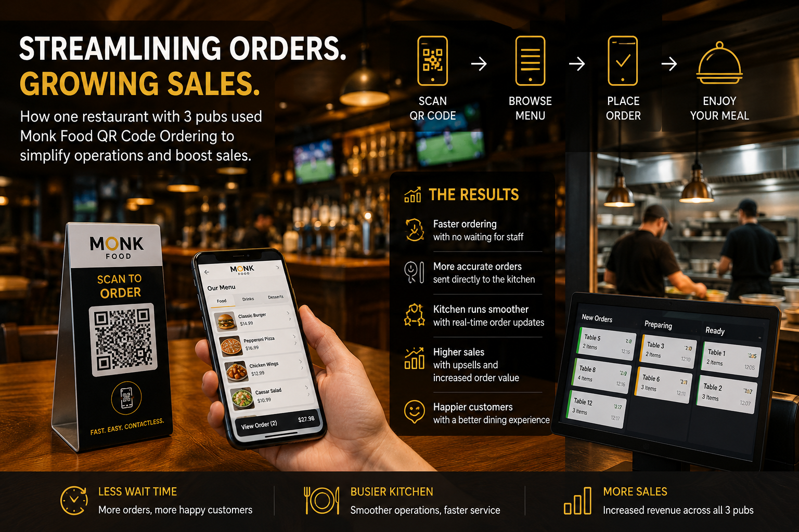

How One Restaurant with Three Pubs Increased Sales Using Monk Food QR Code Ordering

Running multiple venues comes with its own challenges. One restaurant group with three busy pubs was constantly dealing with long queues, delayed table service, and overwhelmed staff during peak hours. Customers were waiting too long to place orders, while the kitchen struggled to keep up with handwritten tickets and communication delays.
Everything changed when they introduced Monk Food QR Code Ordering.
Guests simply scanned the QR code at their table, browsed the digital menu, and placed their orders directly from their phones. Orders were sent instantly to the kitchen, eliminating manual order taking and reducing mistakes.
The results were immediate:
- Faster ordering with no waiting for staff.
- More accurate orders sent directly to the kitchen.
- Staff spent less time taking orders and more time delivering excellent customer service.
- Customers ordered more drinks and desserts through easy upselling on the digital menu.
As ordering became quicker and more convenient, the kitchen became busier—not because of delays, but because more orders were flowing in consistently. The streamlined ordering process allowed the restaurant group to serve more customers during busy periods without increasing front-of-house staff.
With three pubs all using the same system, operations became more efficient, tables turned over faster, and overall sales increased significantly.
Why Monk Food QR Code Ordering Works
Monk Food helps hospitality businesses:
- Reduce waiting times.
- Improve order accuracy.
- Speed up kitchen communication.
- Increase average order value through digital upselling.
- Deliver a better customer experience.
- Boost revenue without adding extra workload for staff.
Whether you operate a single café or multiple restaurants and pubs, Monk Food QR Code Ordering can simplify your operations, improve efficiency, and help your business grow.
Ready to modernize your restaurant? Discover how Monk Food QR Code Ordering can streamline your service, keep your kitchen productive, and drive more sales for your business.